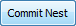
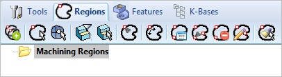
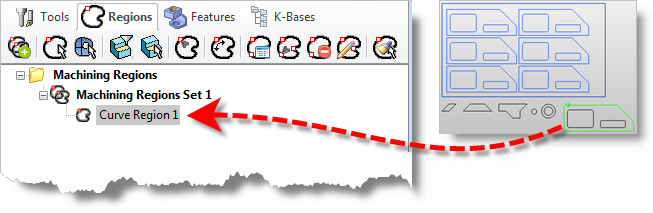
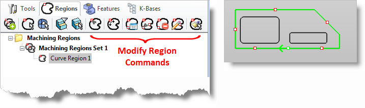
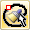
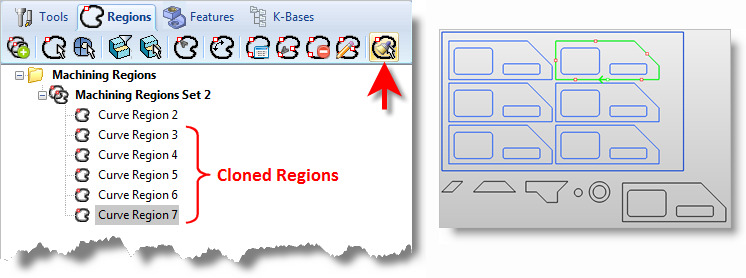

The Machining Objects Browser located in the MILL module provides a Regions function that will clone an existing pre-defined region and propagate it to all identical geometry shapes. This allows such region characteristics as Start Point, Region Direction, and Bridge Points to be defined on one Part and then propagated to all identical parts in a Nest.
The following example describes the process to accomplish this:
The nest must be Committed so that the nest geometry exists on one or more layers of the CAD file. The Commit Nest button is located on the Preview and Commit Nest tab of the Nesting Browser.  |
Exit the NEST module and then activate the MILL module to access the Regions tab of the Machining Objects Browser.  Regions tab of the Machining Objects Browser |
Using the Select Curves icon (2nd from left), select the geometry shape of one of the parts where the Start Point, Region Direction, and/or Bridge Points need to be defined and propagated throughout the nest. Accept the selection and notice that the region is created in the Browser list, such as Curve Region 1 shown below.
 Curve Region Defined |
The Regions tab contains other commands to modify Regions. You can use these to modify the Start Point, change the Region Direction or add Bridge Points to that pre-defined region.  Locating the Modify Region Commands |
When the pre-defined region is defined as desired and is highlighted in the Browser, select the Clone Selected Machining Regions icon (right-most). The system will find all other parts whose geometry is identical to the pre-defined Region and create a cloned pre-defined Region with the same characteristics on each those identical parts. See Notes below.  The Display of Cloned Regions
|
Repeat Steps 3-5 for other Parts and Holes where needed. |
After all the pre-defined Curve Regions are created, go through the Curve Regions List and remove any Regions that are not needed, such as the Regions created on the original staged parts and any duplicate Regions. |
If necessary, any of the resultant pre-defined Regions can be individually modified to meet machining needs, such as changing the Start Point and modifying Bridge Points. |